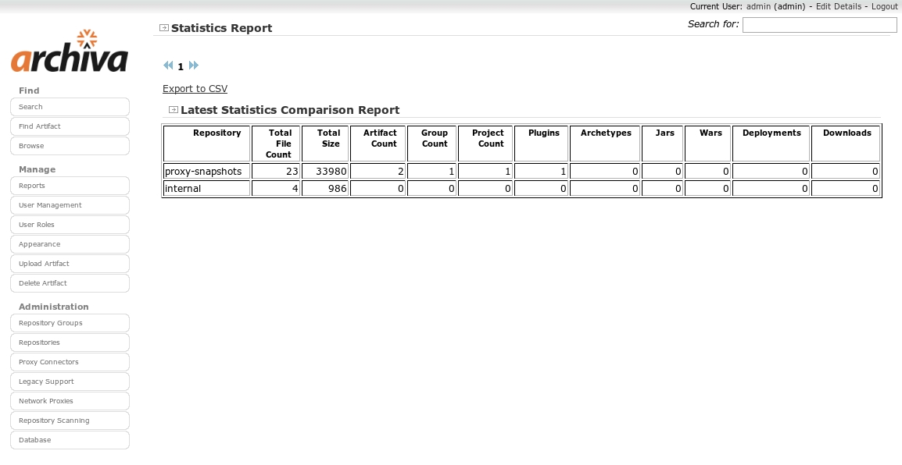
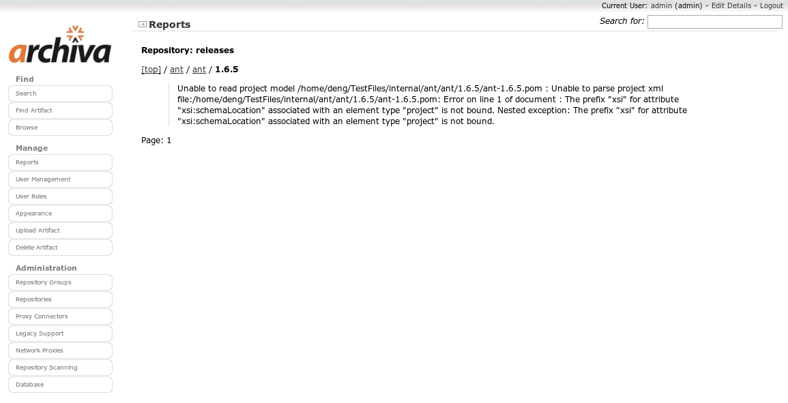

Archiva has two types of reports: Repository Statistics and Repository Health. Repository Statistics was just implemented in 1.2.
Repository statistics contains the detailed statistics such as number of artifacts, number of groups and projects, etc. of an Archiva managed repository.
The following fields are configurable for Repository Statistics:
1. Repositories to be Compared - the repositories whose latest statistics would be compared. If only one repository is selected, the different statistics based on the executed repository scanning and the specified Start Date and End Date will be shown. Otherwise, the latest statistics of the selected repositories on the specified dates will be displayed.
2. Row Count - the number of rows to be displayed on each page.
3. Start Date - the start date range of the statistics to be displayed.
4. End Date - the end date range of the statistics to be displayed.
The Repository Statistics Show Report button will display a table containing the statistics of the repository/repositories. See below for a sample Repository Statistics report comparing two repositories:
Repository Statistics can be exported to a CSV file. To do this, just click the link on the upper left hand corner above the report.
The Repository Health report is a detailed listing of the problematic artifacts in the different repositories. Problematic artifacts are those artifacts that were detected by Archiva to have defects (ex. the versions in the pom and in the artifact itself do not match).
There are 3 fields which can be configured when viewing the report. These are: the number of rows per page, the group id and the repository.
1. Setting the row count. This field is for configuring the number of rows or artifacts to be displayed per page of the report. By default, this is set to 100. The minimum number of rows per page is 10 and the maximum number of rows is 1000.
2. Setting the group id. The group id pertains to the group id of the artifact (ex. org.apache.maven.plugins). This field has a blank default value -- meaning, show defective artifacts which has any group id.
3. Setting the repository. You can view the defective artifacts found on specific repositories by setting the repository field. By default, it is set to All Repositories. Please note that the repository field options list only contains the repositories which have one or more defective artifacts in it. So not all the repositories you have configured in the Repositories section will show up in this list, unless of course they all contain defective artifacts.
The Repository Health Show Report button will display a detailed list of problematic artifacts filtered according to the configuration you've set. Below is a sample Repository Health report:
You can see in the sample report that there are links to the groupId and artifactId directories of each artifact. Clicking on any of these links will bring you to the appropriate navigation page in the Repository Browse. Going back to the report, shown below the links is the specific problem or defect of the artifact. These are usually detected during repository or database scanning. The page number is also displayed on the lower left-hand part of the report.